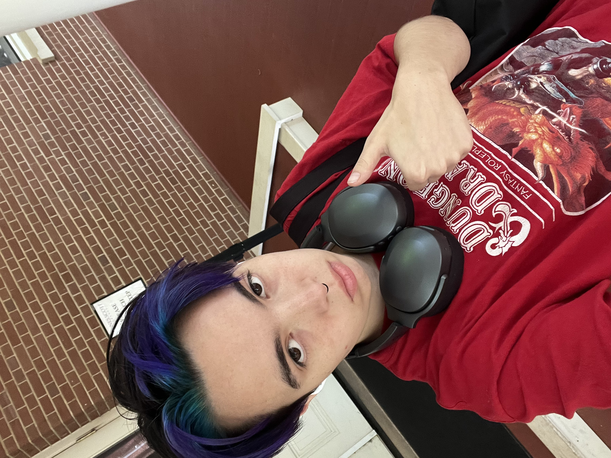
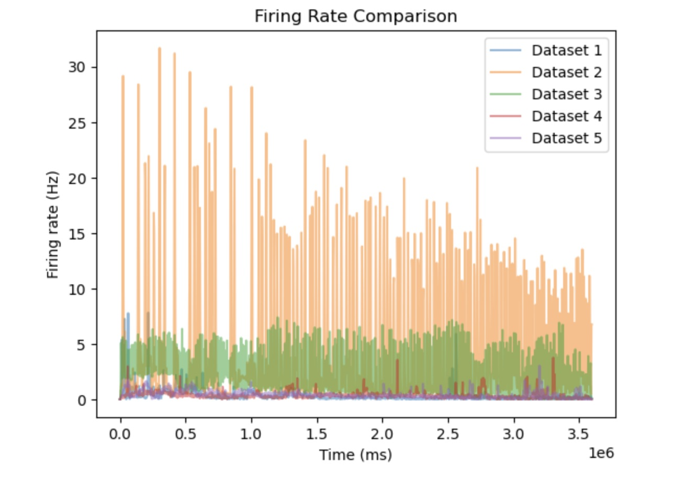

Cass D.V.I had three main questions: what does the spiking look like for diffrent sets? How does the firing rate look across data sets (n=5)? How do individual firing rates change over time (& compared to eachother)?
Each vertical line represents a spike, 20 neurons are respresented in each graph, over 3600000 Miliseconds. These figures were made using MATLAB.
These plots were limited to 20 neurons because anything else would crash my computer!.
These PSTH (Peristimulus Time Histogram) plots show the firing rate over time for each data set. These figures were made using python.
These PSTH (Peristimulus Time Histogram) plots show the mean firing rates over time across all 5 datasets. These figures were made using python.

This figure shows the PSTH plots for all 5 data sets, so the firing rates can be easily compared. This plot was made using Python.
Hi, I'm Cass — a undergraduate student based in ATL. I am currently completing my Neuroscience degree at Agnes Scott College.